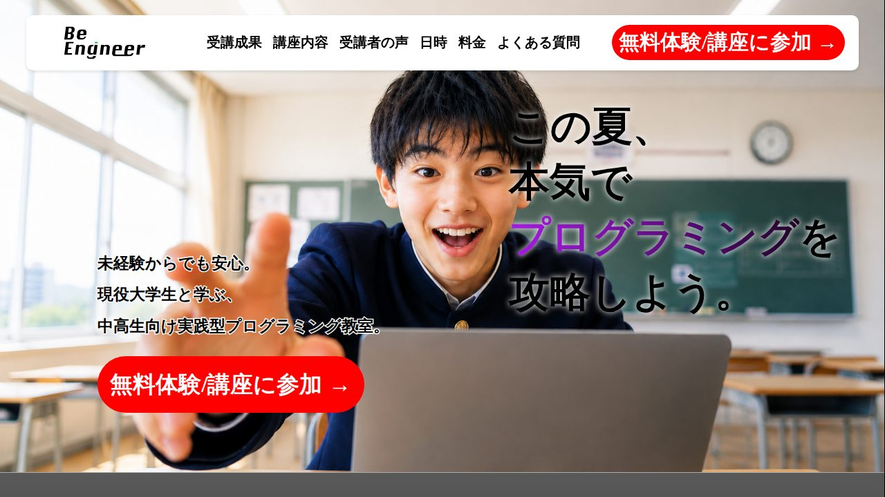
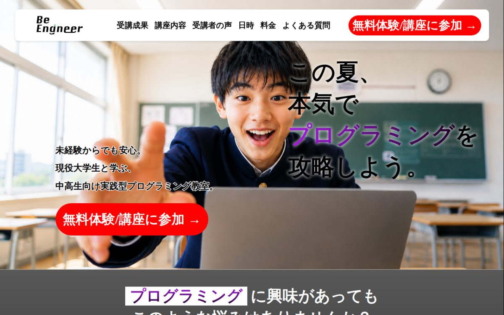
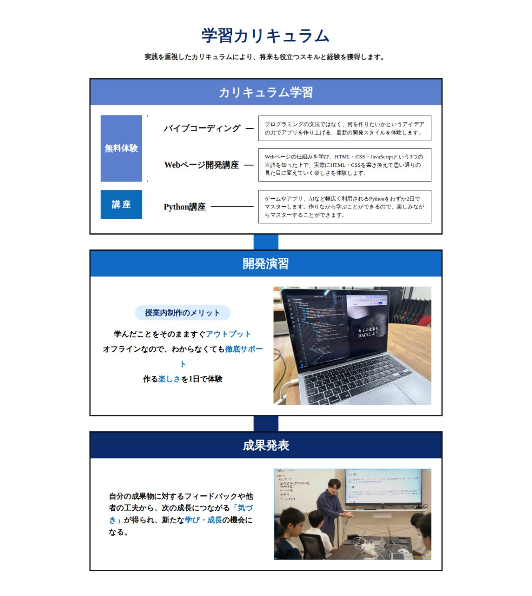
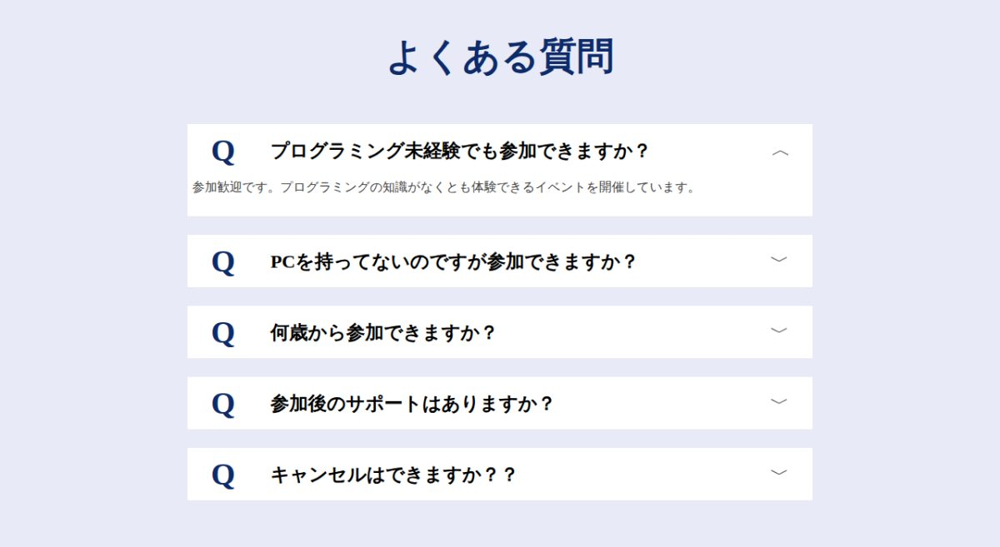
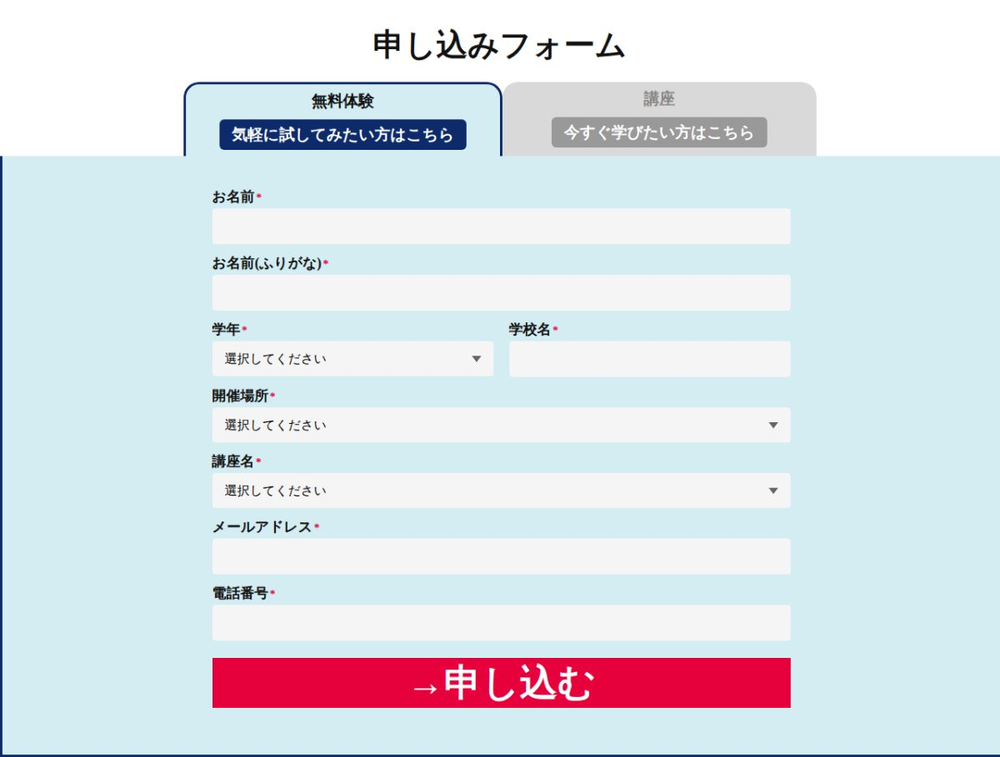

01 / Challenge · 解決したいこと
教室の魅力は伝わっていても、申し込みボタンまでが遠く、読み進めた人が問い合わせまでたどり着きにくい。中高生と保護者の両方が知りたいこと（内容・日程・料金・不安）も1ページで答えたい。
Work / 2026
中高生向けプログラミング教室 BeEngineer の、無料体験・講座への申し込みを集めるための1ページのLP。どこまで読んでも、すぐ申し込みフォームに飛べる構成にした。

教室の魅力は伝わっていても、申し込みボタンまでが遠く、読み進めた人が問い合わせまでたどり着きにくい。中高生と保護者の両方が知りたいこと（内容・日程・料金・不安）も1ページで答えたい。
「悩み → 得られること → 選ばれる理由 → カリキュラム → 受講生の声 → 日程と料金 → よくある質問 → 申し込み」の順に、読む人の疑問に答えていく1ページを作った。ヘッダー・最初の画面・ページの途中2か所に申し込みボタンを置いている。




フレームワークを使わず HTML / CSS / JavaScript を手書き。レスポンシブ対応（1120・1024・768px で切り替え）で、スマホではハンバーガーメニューになる。favicon と SNS 共有画像は BeEngineer の「B」ロゴから作成。
GitHub Pages で公開中。申し込みフォームは見た目と切り替えまでで、送信先にはまだつないでいません。同じページを別の構成で試した試作版（test.html）もリポジトリに残しています。